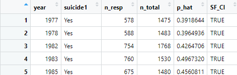
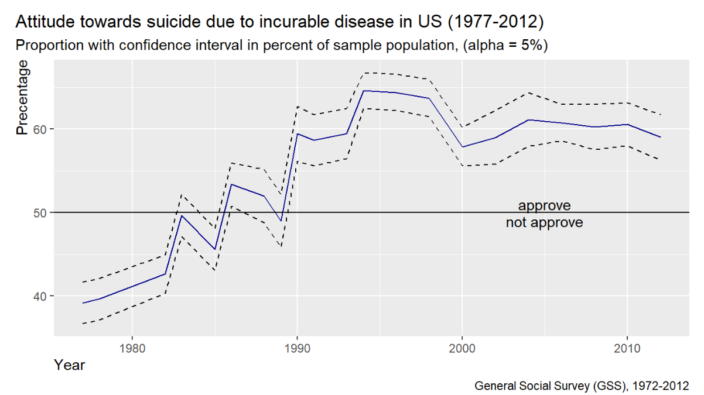

Project 1: Step-by-Step Guide
INFERENTIAL STATISTICS
Objectives
Objective of this project is to apply learned contents of
“inferential statistics. Skills demonstrated are:
Central Limit Theorem, Confidence Interval,
Hypothesis Testing,
Inference Categorical Data,
Inference Numerical Data, z-Test,
Chi-square Test, t-test, F-test,
ANOVA
Code chunks and detailed descriptions can be found in the R-Markdown file.
Definitions
Inferential statistics makes propositions about a population, using
data drawn from the population with some form of sampling. Some common
forms of statistical proposition are:
point estimates, e.g. sampling proportion \(\hat{p}\) or sampling mean \(\hat{x}\) for true proportion \({p}\) or true mean \({\mu}\), respectively
confidence interval (CI) for the point estimate that contains the true parameter with probability at a stated confidence level:
for proportions:\(\quad point\_estimate\quad \pm\quad {z^*} \times {SE}\quad\);
\(z^*\) is the z-statistics of the critical value for a stated confidence interval
\(SE\) is the standard error of the sample proportion
for numerical:\(\quad point\_estimate\quad \pm\quad {t^*} \times {SE}\quad\);
\(t^*\) is the t-statistics of the critical value for a stated confidence interval
\(SE\) is the standard error of the sampling mean
hypothesis testing of a null hypothesis against an alternative hypothesis for a statistical proposition, e.g.:
- \(H_0\) (null hypothesis): \(\quad \quad \quad \ \ \ \ p\quad=\quad\)
0.5
- \(H_A\) (alternative hypothesis):
\(\quad p\quad\ne\quad\) 0.5
or
- \(H_0\) (null hypothesis): \(\quad \quad \quad \ \ \ \ \mu\quad=\quad\)
0
- \(H_A\) (alternative hypothesis):
\(\quad \mu\quad\ne\quad\) 0
- \(H_0\) (null hypothesis): \(\quad \quad \quad \ \ \ \ p\quad=\quad\)
0.5
To infer propositions from the sample to the population the conditions for the Central Limit Theorem must be fulfilled. I.e. a sample will be nearly normal distributed if:
The sampled observations are independent
The sample size is sufficient large enough:
- for proportions: \(\quad n \times p\ \gt\
10\quad {and}\quad n \times (1-p)\ \gt\ 10\)
- for numerical: \(\quad\ \ \ n\ \gt\
30\)
- for proportions: \(\quad n \times p\ \gt\
10\quad {and}\quad n \times (1-p)\ \gt\ 10\)
Part 1: The data set
For this project the data set “General Social Survey (GSS) Cumulative
File 1972-2012” was used provided through the course. This data set is a
sample of selected indicators in the GSS with the goal of providing a
convenient data resource for students learning statistical reasoning
using the R language.The data set contains 114 variables and 57,061
observations. Link
Five meaningful research questions were formulated and answered
covering the most important methods of inferential statistics. The
samples were taken randomly and the size of each sample is above 1000
and the inference statistic can be therefore generalized to the US
population.
Part 2: Research questions
Part I: Inference for categorical data
Research question 1: Inference for a single proportion (z-test)
Research question 2: Inference for a difference of two proportions
(z-test)
Research question 3: Testing for independence of many proportions
(Chi-square test)
Part II: Inference for numerical data
Research question 4: Inference for a difference of two means
(t-test)
Research question 5: Inference for differences of many means: ANOVA
test
Part 3: Categorical data
1. Single proportion
Research Question 1: Attitude towards suicide
One of the question in the GSS survey was the attitude towards
suicide if someone has an incurable disease. Do the majority of
Americans approve the view on suicide in this case?
- Calculate the proportion and its confidence
interval at a 95% confidence level.
- Does the data provide strong evidence that the majority of people
approve the view on suicide in this case. Apply a hypothesis
test with a significance level of 5%.
- Run the tests over all samples and identify a trend over the
years.
We will cary out a one-sided z-Test.
Variable
Variable suicide1(2 levels): Suicide if incurable
disease, single variable
Data exploration
Distribution of categories “approved” vs. “not approved” for all
years.
1a) Inference - Confidence interval for proportion
Condition check:
1. Independence of observations: Samples were taken randomly (see Part
1) => OK
2. Success-failure condition (SF condition): Calculate the SF conditions
(SF_CI) by using the sample proportion “p_hat”

Independence and SF conditions for all samples are met. We can,
therefore, conclude the sample proportion p_hat is nearly normal
distributed and we can apply the z-statistic to calculate the confidence
level.
Confidence interval
For the confidence intervals we calculate the sample proportion (p_hat), the Standard error (SE), the critical z-value (z_star) given via the significance level, the margin of error (MOE) and the lower and upper boundary:
Conclusion: We are 95% confident that the true
proportion of the American population who approved suicide in case of
incurable disease was in 1977 between 36.7% and 41.6%, and in 2012
between 56.3% and 61.7%.
1b) Inference - Hypothesis Test
Null hypothesis (H0): There is no strong evidence that the American population approves suicide in case of incurable disease.
Alternative hypothesis (Ha): There is strong evidence that the
American population approves suicide in case of incurable disease.
This can be formulated as:
- H0: p0 = 0.5 (there is no minority or majority to approve
suicide)
- Ha: p > 0.5 (there is a majority to approve suicide)
- Significance level: alpha = 0.05 (5%)
Condition check:
1. Independence of observations: Samples were taken randomly (see Part
1) => OK
2. Success-failure condition: Calculate the SF condition (SF_HT) by
using the true proportion “p0 = 0.5” assuming that the Null-hypothesis
is true.
Independence and SF conditions for all samples are met. We can,
therefore, conclude the sample proportion p_hat is nearly normal
distributed and we can apply the z-statistic to calculate the confidence
level.
Hypothesis test
For the hypothesis test we calculate the Standard of Error (SE), z-Statistic (Z) and the p-value. The p-value tells us how likely the observations could have occurred under the null hypothesis. If the p-value is smaller than the given significance level (alpha=0.05) we will reject the null hypothesis in favor of the alternative hypothesis.
Conclusion: In 14 out of 21 samples the data show
strong evidence that the majority of the population does approve suicide
in case of incurable disease, with a type 1 error of 5%. I.e we may have
made an error of 5% by rejecting the hypothesis but in fact the null
hypothesis is true.
In 7 out of 21 samples the data do not show strong evidence that the
majority of the population does approve suicide in case of incurable
disease.
1c) Inference - Trend
Visualizing the trend of population attitude towards suicide between 1977 and 2012:

Conclusion: Between 1977 to 1989, the majority of the
population did not approved suicide, except in 1986. Whereas, from 1990
onwards the majority did approve it. The approval rate for suicide
increased overall from 39% to 69% between 1977 and 1994 then slightly
decreased to 59% in 2012.
The results of the confidence interval and hypothesis tests agree with
each other. I.e a “Fail to reject H0/ no majority” result corresponds to
a confidence interval whose lower boundary value is less or equal to
50%.
2. Difference of two proportions
Research Question 2: Success in life through hard work - belief by race
Another question in the GSS survey is about the belief that hard work leads to success in life. We want to find differences in belief between the White and Non-white population and do a statistical test on the difference of two proportions.
- Calculate the proportion difference and confidence
interval at a 95% confidence level
- Does the data provide strong evidence that there is a difference in
belief. Apply a hypothesis test with a significance
level of 5%
- Run the tests over all samples and identify a trend over the
years.
Variables
Categorical variable getahead (4 levels): Opinion of how
people get ahead, response variable
Categorical variable race (3 levels): Race of respondent,
explanatory variable
Data exploration

Group categorical levels to meaningful
sub-categories
- race: grouping “Black” and “Other” -> “Non-white”
- getahead: grouping “Both Equally”, “Luck Or Help”, and “Other” ->
“Other”
2a) Inference - Confidence Interval
Condition check:
1. Independence of observations: Samples were taken randomly (see Part
1) => OK
2. Success-failure condition (SF condition): Calculate the SF conditions
(SF_CI) by using the sample proportion “p_hat_white” and
“p_hat_non_white”.
Independence and SF conditions for all samples are met. We can,
therefore, conclude the sample proportions p_hat_white and
p_hat_non_white are nearly normal distributed and we can apply the
z-statistic to calculate the confidence level for the proportion
difference.
Confidence interval
For the confidence intervals we calculate the Standard error (SE), the critical z-value (z_star) given via the significance level, the margin of error (MOE) and the lower and upper boundary:
Conclusion: We are 95% confident that the true
proportion difference between White and Non-white Americans who belief
that hard work leads to success is between -9.0% and 2.2% in 2012. I.e.
the true difference could be either negative or positive. Therefore,
there is no clear winner. This will be covered more in the hypothesis
test.
2b) Inference - Hypothesis Test
Null hypothesis (H0): There is no strong evidence of a difference in
belief between White and Non-white American population that hard work
leads to success in life.
Alternative hypothesis (Ha): There is strong evidence of a difference
in belief between White and Non-white American population that hard work
leads to success in life.
This can be formulated as:
- H0: p0_diff = p_white - p_non_white = 0 (there is no
difference)
- Ha: p_diff = p_white - p_non_white != 0 (there is a
difference)
- Significance level: alpha = 0.05 (5%)
We will carry out a two-sided z-Test
Condition check:
1. Independence of observations: Samples were taken randomly (see Part
1) => OK
2. Success-failure condition: Calculate the SF condition (SF_HT) by
using the proportion “p_pool”, the weighted average of “p_hat_white” and
“p_hat_non_white”.
Independence and SF conditions for all samples are met. We can,
therefore, conclude the sample proportion p_hat_white and
p_hat_non_white are nearly normal distributed and we can apply the
z-statistic to calculate the confidence level.
Hypothesis test
For the hypothesis test we calculate the Standard of Error (SE), z-Statistic (Z) and the p-value.
/
Conclusion: In 17 out of 24 the data show no strong
evidence that there is a difference in belief between White and
Non-white Americans that hard work leads to success. In other words, we
have no strong evidence that being a white American increases or reduces
the belief that hard work leads to success in life.
Only in 7 out of 24 the data show strong evidence that there is a
difference in belief between White and Non-white Americans that hard
work leads to success. In other words, we do have strong evidence that
being a white American increases or reduces the belief that hard work
leads to success in life
2c) Inference - Trend
Visualizing the trend of population attitude towards hard work between 1973 and 2012:
Conclusion: Overall, the White group believes more
than the Non-White group, that hard work leads to success in life.
However, in most cases (17 out of 24) the difference is not
statistically significant, due to a large margin of error (+/-6.8%). The
results of the confidence interval and hypothesis tests agree with each
other. I.e a “Fail to reject H0” result corresponds to a confidence
interval that does include 0.
3: Independence test
Resarch Question 3: Political party vs. education degree
In this example, we want to answer the question of whether there is a relationship between the preferred political party and the level of education. Both variables are categorical variables with multiple levels.
To test for a relationship, we will conduct a Chi-square test
for independence. An introduction to this test can be found in the text book for this course,
OpenIntro Statistics, 4th edition, page 240
We will use the following variables:
- Categorical variable
partyid(8 levels): Political party affiliation, response variable
- Categorical variable
degree(5 levels): Respondents highest degree, explanatory variable
The Hypothesis test can be formulated in the form:
- H0: The political party preference is independent
from the education degree
- Ha: The political party preference is not
independent from the education degree
- Significance level: alpha = 5%
Data exploration
The 8 levels in category partyid will be regrouped into
the 3 major political parties: Republican, Democrat and Independent. The
relationship between education degree and preferred political party is
shown the the next plot.
Create a two-way table for independence test
3) Inference - Independence test
Check conditions
- Independence:
- random sampling within each group: OK
- random sampling between groups: OK
- sample size < 10% of population: OK
- each case only contributes to one cell (assumed): OK
- Sample size:
- each cell size > 5: OK
All conditions are met and nearly normal distribution can be assumed.
Chi-square test statistic can be applied.
Chi-square test
The Hypotheses:
- H0: The political party preference is independent
from the education degree
- Ha: The political party preference is not
independent from the education degree
- Significance level: alpha = 5%
Chi-square statistics:
- X-squared = SUM ((observed - expected)^2 / expected)
- The test statistics is comparing the observed values/proportions
with expected values/proportions. The expected values are calculated
from marginal proportions.
Conclusion: The X-squared value is large (62.2) and
the p-value is nearly zero. We can, therefore, reject H0 hypothesis.
I.e. the political party preference depends on the degree of
education.
Part 4: Numerical data
4. Difference of two means
Research question 4: Attitude towards space exploration spending by education
One of the questions in the GSS survey deals with the attitude towards government spending on space exploration (too little, too much). We want to know if there is difference in the attitude due to average years of education in 2010 to 2012. We assume that people with more years of education may think that the gov. spending is too little. To proof this claim we will conduct a hypothesis test and calculate the confidence interval by t-statistic.
We will use the following variables:
- Categorical variable
natspac(3 levels): Space exploration program, response variable
- Numerical variable
educ: Highest year of school completed, explanatory variable
Tasks:
- Calculate a summary statistic and a confidence
interval for the difference in means at a 95% confidence
level
- Does the data provide strong evidence that Americans with more years
in education think that the government spending for space exploration is
too little. Apply a hypothesis test with a significance
level of 5%
Data exploration - Variable
naspac
Distribution of attitude towards space spending (too little, too
much):
Data exploration - Variable educ
Summary statistics:
Distribution of years of education by attitude space spending:
Check of normality or skewness of distribution:
The distributions indicate some left skew. We like to calculate the
skewness and decide if we can use the samples for the statistical
test.
The skewness values are between -0.5 and +0.5, i.e. approximately
symmetric distribution. Link.
4a) Inference - Confidence Interval
Check conditions
1. Independence:
- random samples within each group: OK
- samples between groups are not paired: OK
- sample size < 10% of population: OK
2. Sample size/ skewness
- each sample size is > 30: OK
- skewness is between -0.5 and +0.5, i.e. approx. symmetric: OK
All conditions are met and nearly normal distribution can be assumed.
t-statistic can be applied
Calculate confidence interval
Conclusion: We are 95% confident that the true
difference in mean for years in education is between 1.24 and 1.98
years.
I.e. The American public who thinks that the spending for space
exploration is too little attended in average 1.24 to 1.98 more years in
education as their counterparts.
4b) Inference - Hypothesis Test
Null hypothesis (H0): There is no strong evidence that Americans with
more years in education think that the government spending for space
exploration is too little.
Alternative hypothesis (Ha): There is strong evidence that Americans
with more years in education think that the government spending for
space exploration is too little.
This can be formulated as:
- H0: mue_diff = mue_too_little - mue_too_much = 0 (there is no
difference)
- Ha: mue_diff = mue_too_little - mue_too_much > 0 (is greater than
null)
- Significance level: alpha = 0.05 (5%)
mue: population mean (true mean)
mean: sample mean (estimate of true mean)
We will carry out a one-sided t-Test
Check conditions
1. Independence:
- random samples within each group: OK
- samples between groups are not paired: OK
- sample size < 10% of population: OK
2. Sample size/ skewness
- each sample size is > 30: OK
- skewness is between -0.5 and +0.5, i.e. approx. symmetric: OK
All conditions are met and nearly normal distribution can be assumed.
t-statistic can be applied
Hypothesis test
Conclusion: The data show strong evidence that
Americans with more years in education think that the government
spending for space exploration is too little. The p-value is <
0.0001. I.e. the probability to observe a mean difference of 1.61 or
more if in fact H0 is true is less than 0.01%.
The results of the confidence interval and hypothesis tests agree with
each other. I.e a “Reject H0” result corresponds to a confidence
interval that does not include the value “zero”.
5. ANOVA Test
Inference - ANOVA Test and Multiple Comparison Test
Null hypothesis (H0): There is no strong evidence that the average
number of children per respondent differs between social classes.
Alternative hypothesis (Ha): There is strong evidence that the average
number of children per respondent differs at least between two social
classes.
This can be formulated as:
- H0: mue_1 = mue_2 = … = mue_k (no difference between true means)
- Ha: mue_i != mue_j (difference between at least two true
means)
- Significance level: alpha = 0.05 (5%)
mue: population mean (true mean)
mean: sample mean (estimate of true mean)
k: number of classes
ANOVA Test
Conclusion: The ANOVA test delivers a p-value of 0.004
which is less than alpha 0.05. Therefore, we reject the Null Hypothesis.
I.e. there is strong evidence that the average number of children per
respondent differs at least in one pair of social classes.
Multiple comparison test (t-test)
Conclusion: The multiple pairwise t-test identifies
the pairs of classes with strong evidence of difference in the number of
children. In this case we test against the corrected alpha value
(Bonferroni correction, alpha_star = 0.0083). For the following pairs we
don’t have strong evidence that there is a difference in the average
number of children per class:
- Middle Class - Working Class (p-value 0.40 > 0.0083) => Fail
to reject H0
- Upper Class - Lower Class (p-value 0.25 > 0.0083) => Fail to
reject H0
- Upper Class - Working Class (p-value 0.55 > 0.0083) => Fail to
reject H0
- Upper Class - Middle Class (p-value 0.36 > 0.0083) => Fail to
reject H0
Only in the pairs “Working Class - Lower Class” and “Middle Class -
Lower Class” we do have strong evidence that there is a difference in
the average number of children per class.